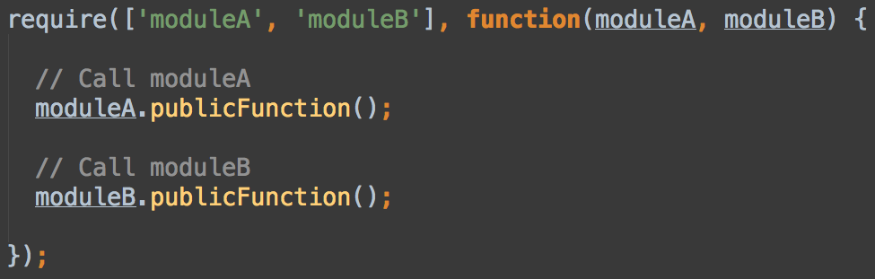

Scaling Javascript:
The growing pains of a jQuery app
Laima Tazmin
Platform Engineer
Refinery29
Refinery29
Publishing Platform
Content APIs
Dash - In-house CMS

Story Editor
(Asset Editor)
How things are
- Single page app
- Lots of DOM manipulation
- AJAX calls to backend
Sounds innocent enough
Except, reality:

How does this happen?
- Product wants a new button
- Create the button and its click listener
- Add variables to keep track of state where convenient
- Place new JS somewhere in the existing code
- Repeat
What's wrong with it though?
- Global namespace
- Implicit dependencies
- View is the Model
- Spaghetti code
- Prone to error
Refactor
- Javascript design patterns
- Asynchronous module definition (AMD)
- MV* architecture
Modularize All the Things
Revealing module pattern
Revealing module pattern
- Encapsulated, focused logic
- Private and public access
- Testable
- Scales easily
AMD - RequireJS
AMD - RequireJS
AMD - RequireJS
- Explicit, stated dependencies
- Nested dependencies
- Scales easily
MV* Architecture
- Model is a "Story" or "Asset"
- View is a part of the Editor UI
- Controller/Mediator/*
Bring it together
Much better!
We're not done though
- Unit testing
- Pub-sub communication
- jQuery?
- Framework?